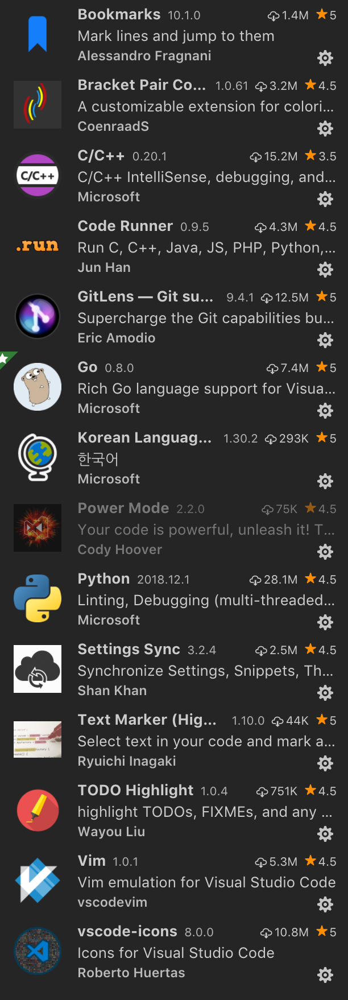
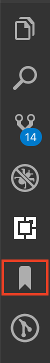
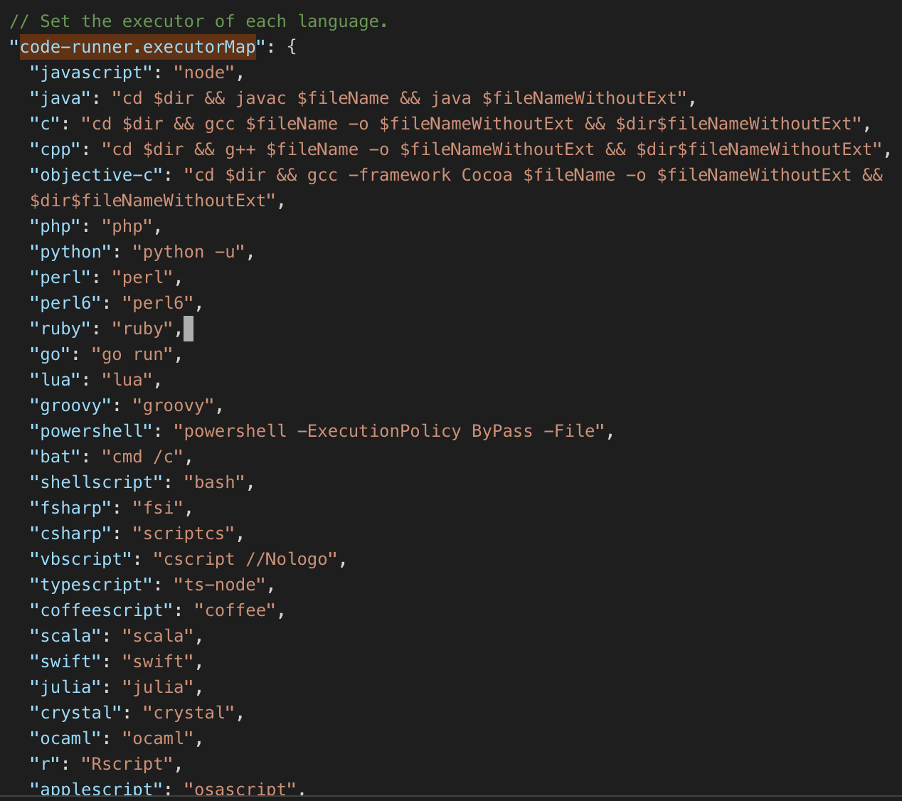

내가 사용하는 Visual Studio Code 확장 프로그램을 정리 및 소개한다. 🧐
주 개발 언어가 Go 라서 다른 프로그래밍 언어에서 많이 사용하는 확장 프로그램들은 설치가 안 되어 있다. 본인 개발 환경에 맞추어 설치가 필요한데, 확장 탭에서 @sort:installs 정렬하여 참고해보면 좋다.
설치 및 사용하고 있는 확장 프로그램은 아래와 같다.

Bookmarks 🔖
Toggle 방식으로 코드의 특정 지점을 북마크한다. 단축키로 북마크 설정과 이동이 가능하다. 좌측 메뉴 바에 북마크 탭을 통해 북마크를 모두 모아서 볼 수도 있다.

에디터 우측에 Preview? (이렇게 칭하는지 잘 모르겠… ) 를 제공하는데, 그 뷰에서도 북마크가 보여서 편리하다.
Bracket Pair Colorizer
프로그램 명 그대로 괄호를 짝 맞추어 각기 다른 색으로 표시해준다. 따로 설정 없이 기본으로 사용하고 있다. 괄호 식별이 잘 돼서 유용하게 쓰고 있다.
Code Runner
코드를 바로 실행할 수 있도록 해준다. C를 예로 들면, gcc를 통해 빌드하고 실행 파일을 실행하는 과정을 단축키로 할 수 있는 것이다.
이 확장 프로그램을 설치하면 기본 code-runner.executorMap 을 제공하는데 그대로 사용하거나 재정의해서 사용하면 된다.

GitLens 👀
코드에 커서를 갖다 대면 Commit 정보를 출력해준다. 누가 언제 작성/수정했는지 Commit Log를 함께 보여주고, 추가 액션도 할 수 있다.
Power Mode 💥
기능 편의를 위한 것이 아니라 시각적 효과를 주는 프로그램이다. 한 자 한 자 타이핑 할 때 마다 폭죽 같은 애니메이션이 발생한다. 재밌어보여서 설치해서 쓰다가 타이핑이 조-금 밀리는 것 같아서 지금은 ‘사용 안 함’ 상태이다. 가끔 코딩하면서 기분 전환하고 싶을 때 재미로 쓸 만 하다.
Settings Sync 🔄
VSCode를 여러 컴퓨터에서 사용한다면 추천하는 프로그램이다. 나도 추천받아서 사용하게 됐는데 좋다. 설정 및 확장 프로그램을 동기화해준다.
내 경우 이 프로그램 덕에 개인 컴퓨터랑 회사 컴퓨터 간 설정을 쉽게 동기화해서 사용하고 있다.
사용법은 프로그램 세부 정보에 잘 나와있으니 참고한다. Github에 토큰을 만들고 Gist ID 를 통해 Upload/Download 하는 방식이다.
Upload/Download를 자동으로 하게 하려면 Advanced Options 에서 ON하면 된다.
- Sync : Advanced Options > Toggle Auto-Download On Startup
- Sync : Advanced Options > Toggle Auto-Upload on Settings Change
Text Marker (Highlighter)
Toggle 방식으로 특정 문자열을 하이라이팅할 수 있다. 단축키…는 기본으로 없는 것 같고 마우스 우클릭 방식으로 사용하고 있다. 개인적으로는 정-말 많이 사용하고 있다. 프리뷰에서도 하이라이트한 색을 표시해준다.
TODO Highlight
딱 TODO 라는 키워드에 대해 하이라이팅을 해준다. 코드를 한 번에 내리 작성하지 못 하고 막힐 때, Commit 전까지는 혼자 보기 위해 주석으로 정리해두는데 그 때 사용한다. 하이라이팅 돼있어서 스크롤 슥슥 내리다가도 눈에 딱 띄어서 놓치지 않게 도와준다.
기본으로 TODO 랑 FIXME 를 제공하고 (나는 TODO 만 주로 사용) 다른 키워드로 커스텀도 가능한 것 같다.
vscode-icons
좌측 메뉴바에서 파일 탐색기를 볼 수 있는데 그 파일들에 아이콘을 적용할 수 있다. 예쁘다. 🤩
아래와 같은, 특정 프로그래밍 언어의 확장 프로그램이나 언어 팩은 소개하지 않았는데 본인이 사용하는 개발 언어의 확장 프로그램은 기본으로 설치해서 사용하면 된다.
- C/C++
- Go
- Python
- Korean Language Pack for Visual Studio Code
- Vim